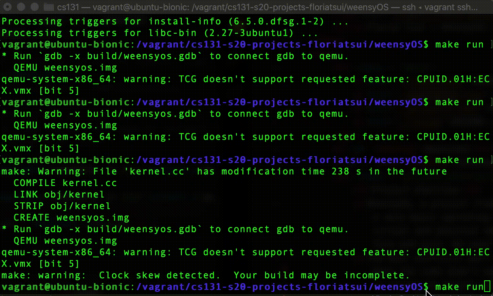

Project Overview

This GIF depicts how the operating system would look after step 4, with virtual memory allocation in place. WeensyOS runs four processes, hence the four different numbers. Each process has its own stack, depicted at the far right, and its own data / code / global variables on the far left. The heap is the space between those two locations. The K represents the kernel code and data and stack. Each empty slot represents an unmapped address. The red background represents the L4 pagetables for each process. Physical and virtual memory mappings are not one to one, after starting at address 0x100000.
WeensyOS, a project from the class CS131, was centered around creating a very basic operating system (x86-64 CPU), by implementing the basic virtual and physical memory architecture as well as the system calls fork and exit. We used QEMU to visualize how our code looked like.
The most difficult part of this project was being unable to use a debugger like GDB to debug the project. When the code didn't work, I would just receive panics or page faults, which was unhelpful in trying to figure out what exactly caused the issue. What I did find helpful in debugging was talking over my code with someone else and try to articulate what my code was trying to do and making sure it was fulfilling those tasks (because many times it just felt like I was writing code into a void—nothing was working it the way I wanted it to).
The First Two Steps
The first step of the project was making sure that no process could write to the memory of the kernel. This step was included changing how the kernel was initialized and setting the permission flags (is the page writable? user accessible? and present?) correctly. And the second part of this step was ensuring that the pages the user requested were not in the region of kernel memory.
The second step of the project was making sure that each process could not write to the other processes running on the operating system and giving each process its own pagetable. This step was difficult because I wasn't exactly sure what the code should look like, part of the reason being I didn't understand what I was doing from a conceptual level, as well as working through navigating a large code base.
The second step was modifying the function process_setup(). First, we would allocate a new page table for the process and copy over the kernel mappings, so that each process isn't accessing the same address space. And after that was complete, the code base provided a function to load each segment of memory of a process, code/text, data, etc.
The Third and Fourth Step
The third and fourth step of the project was implementing virtual page allocation, so the physical to virtual memory mappings are no longer 1 to 1 and each process is using the same full virtual address space (that is backed by different physical addresses). Because of this, each of the different processes cannot write to other processes' memory.
The Last Steps

This GIF depicts when a process forks. The S at the beginning of each process is because there are shared pages between each process that's forked. Each forked process has its own heap and stack, but it shares the same code, which is why those pages in memory can be shared.
The last couple of steps involved writing the system call fork and exit.
The hard part about exit was making sure that there were no memory leaks, for example, what should happen if you fork a process, but there is no more memory? How do you make sure that the memory that you started to allocate is freed?

This GIF depicts when the "e" key is hit on the keyboard. This allows current process to free its memory and resources for new forked processes.